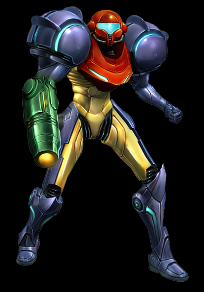
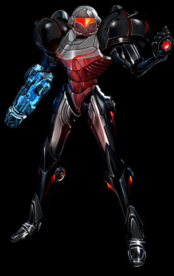
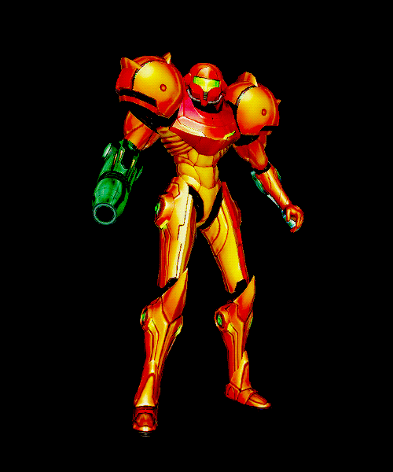

 

The Dark Suit was created by the Luminoth to better defend themselves against Dark Aether's atmosphere, and was once worn by A-Kul. Samus acquires the Dark Suit after defeating the Dark Agon Wastes' energy guardians, the Amorbis, which ruptures the Dark Sphere and causes it to explode, revealing the Dark Suit encased within.
The Dark Suit protects against dark vapor excreted by Ingclaws and filters out 80% of the corrosive effects of Dark Aether's atmosphere, so that Samus only loses 1.2 units of energy per second, as opposed to 6 per second with the Varia Suit.

The Varia Suit (バリアスーツ, Baria Sūtsu?), alternatively referred to as Barrier Suit[1] and Varia Feature[2], is a Power Suit upgrade.
Samus is most commonly depicted wearing this suit, but like many of her other upgrades, it is lost at or prior to the beginning of most games, requiring her to track the upgrade down at a later point in time. It is acquired by picking up an item, which is called the Varia in Metroid and Return of Samus.
In general, the Varia Suit reduces damage taken and protects Samus Aran from extreme heat. The maximum temperature that the Varia Suit can protect against is unknown, but the Gravity Suit is generally required for some of the higher temperature liquids. The name "Varia" is a mistranslation of the word "barrier" (although the Return of Samus manual uses the correct translation), which describes its shielding properties; coincidentally, it also resembles the English words "variety" or "variable", referring to how the suit can handle a variety of temperatures, a trait demonstrated in Metroid Fusion.
Samus Aran's Light Suit is a fusion of Luminoth and Chozo technology. Created by the Luminoth as the ultimate armor for fighting the Ing, it renders Samus completely invulnerable to the damaging effects of Dark Aether's atmosphere.
The Light Suit itself is powered by the Light of Aether, and as such is only obtained after Samus has returned the planetary energy to all three temples. Once all three have been restored, U-Mos will give her the Light Suit upon her return to the Great Temple.
The suit also allows Samus to traverse Dark Water without taking damage, as well as walk through swarms of Ingstorm and ride on Light Shafts. These beams of light teleport Samus between the four main temples, aiding her final quest in recovering the Sky Temple Keys.
The Phazon Suit (フェイゾンスーツ Feizon Sūtsu) is an upgrade to Samus Aran's Power Suit acquired in Metroid Prime and the game's final upgrade. While other suit upgrades involve the incorporation of advanced technological hardware, the Phazon Suit was the inadvertent result of the Power Suit being virally corrupted by Phazon upon defeating the Omega Pirate.
It would later serve as the foundation for Dark Samus's body in the main games of the Metroid Prime series.The most distinguishing feature of the Phazon Suit was its uniquely dark color scheme: The armor covering the arms, legs and shoulders was entirely glossy black, while the helmet, torso and inner thighs were a dark silver-grey. Its visor was a bright orange, while the lights on the suit were crimson. Strangely, the Phazon Suit also emitted a slight aura that distorted the air around it, most likely due to radiation or the strength of its defensive shielding.
In Metroid Dread, Samus starts out with her Varia Suit, before an attack by Raven Beak downgrades her to a version reminescent of the Fusion Suit, but with a white and blue main motif instead of yellow and blue. Over the course of the game, Samus restores the Varia Suit (which in this game lacks the added immunity to low temperature, which is granted by the Gravity Suit instead) and eventually upgrades to the Gravity Suit.
The Phazon Enhancement Device Suit is a Phazon Enhancement Device designed for Samus Aran. After Dark Samus corrupted her, Ghor, Rundas, and Gandrayda, their bodies began producing Phazon. The Galactic Federation rebuilt Samus' suit with their PED technology so that she may safely harness Phazon. Energy Units are replaced with Phazon Units, and exposure to some forms of Phazon will restore Samus' energy.
The PED is similar to the Fusion Suit in that it melds Samus' Power Suit with GF technology. The PED is also described as a 'fusion' between GF and Chozo technology in its description.
Thanks to the PED Suit, Samus can enter Hypermode and use Phazon against opponents. However, this costs one Energy Tank. If Samus remains in Hypermode for too long, she will overload and enter Corrupt Hypermode, meaning that she must expel her excess Phazon, and if it fills up completely she will transform into another Dark Samus, which leads to an automatic Game Over. If she is able to safely sustain Hypermode for too long, the suit's safety mechanism will automatically shut Hypermode down. Each time Samus' corruption grows, she is able to access a new ability. The initial ability Samus starts off with is the Hyper Beam, followed by the acquisition of the Hyper Ball, then the Hyper Missiles, and finally the Hyper Grapple.
After the planet Phaaze was destroyed, all Phazon disappeared from Samus' body; as a result, her PED suit reverted back to its original colors, with no discoloration or other traces of Phazon corruption. After escaping Phaaze through the wormhole, Samus' suit apparently discarded the PED upgrade, as it had returned to its usual Varia Suit configuration by the time Samus flew past the bridge of the G.F.S. Olympus.
The Gravity Suit (グラビティスーツ Gurabiti Sūtsu) (Gravity Feature in Metroid: Other M) is an upgrade for Samus Aran's Power Suit. As its name implies, the Gravity Suit's primary function is to negate extreme gravitational effects around its wearer, such as zero gravity in space. When wearing the Gravity Suit, Samus is able to move unhindered in environments with abnormal gravity and negates the resistance that would normally be exerted on her in liquid environments. Depending on the version, the Gravity Suit may also impart some additional properties: The model found in Metroid Prime gave Samus a clearer view while underwater, whereas, in Super Metroid, Metroid Fusion, Metroid: Zero Mission, Samus Returns, and Metroid Dread the upgrade reduced the damage she took to a greater extent than the Varia alone and negated damage sustained from contacting magma. In Super Metroid, Metroid: Other M, Metroid: Zero Mission, and Metroid: Samus Returns, it was the final suit Samus acquired.